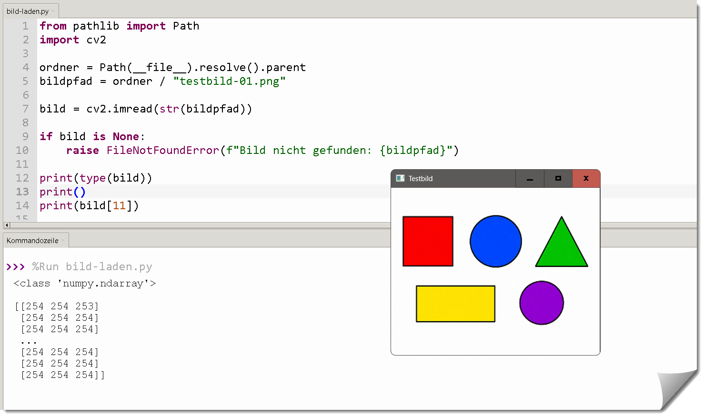
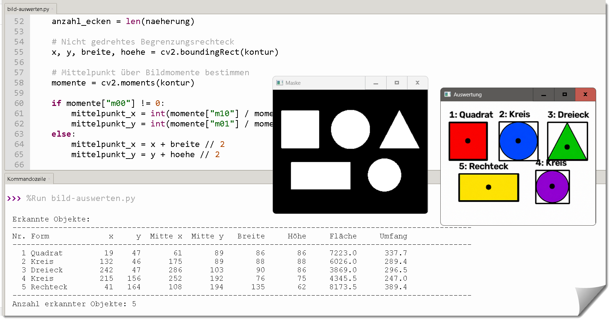
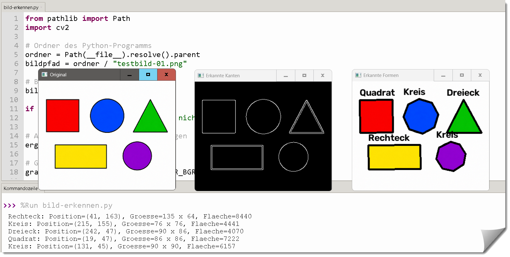
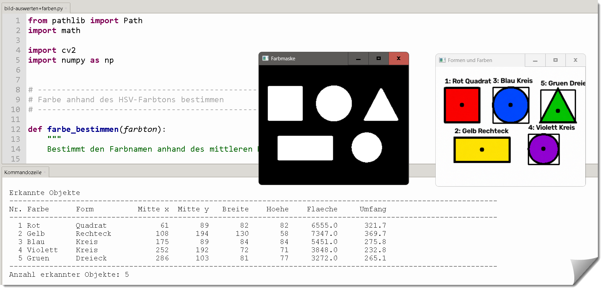

bild-laden.py
Es werden verschiedene Dateiformate (jpg, png, bmp) geladen und angezeigt.
Die Bildgröße wird ermittelt und die Bilddaten werden in einem Array gespeichert.
OpenCV ist eine freie Softwarebibliothek für die Bildverarbeitung und Computer Vision. Sie bietet eine Vielzahl von Funktionen zur Erkennung und Verarbeitung von Bildern und Videos.
In diesem Abschnitt werden wir uns mit den Grundlagen von OpenCV vertraut machen und erste Tests durchführen.



